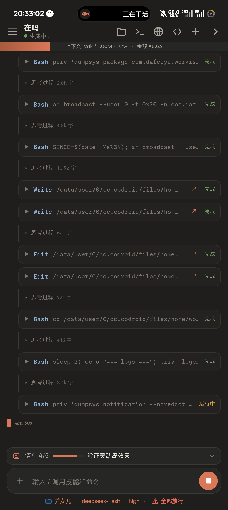
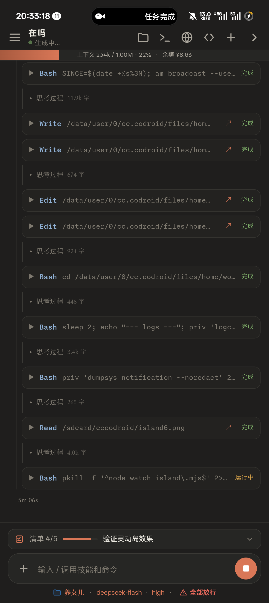
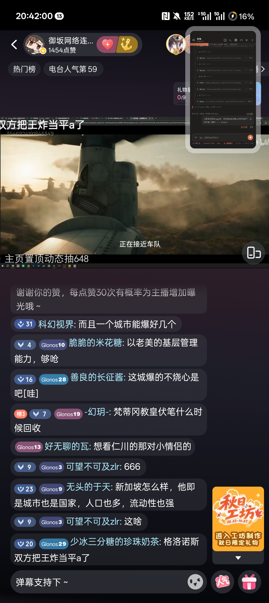
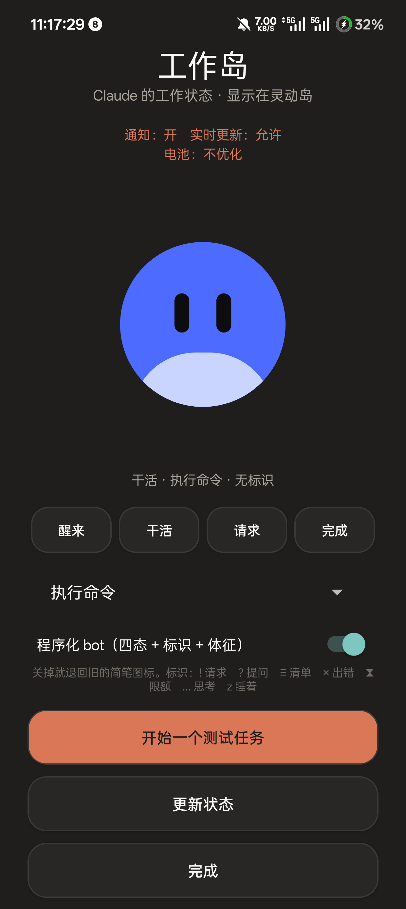
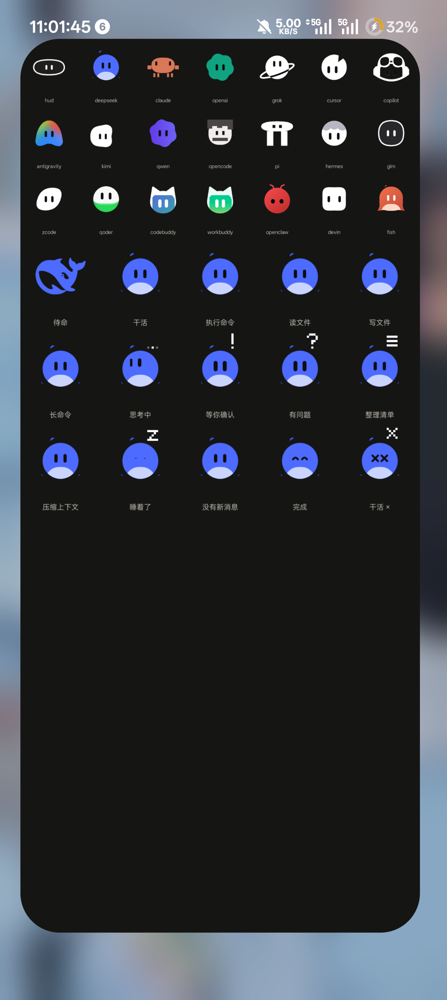
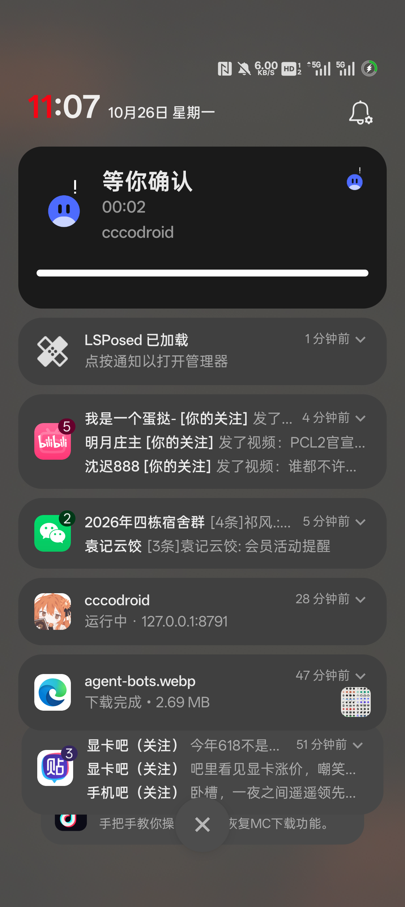
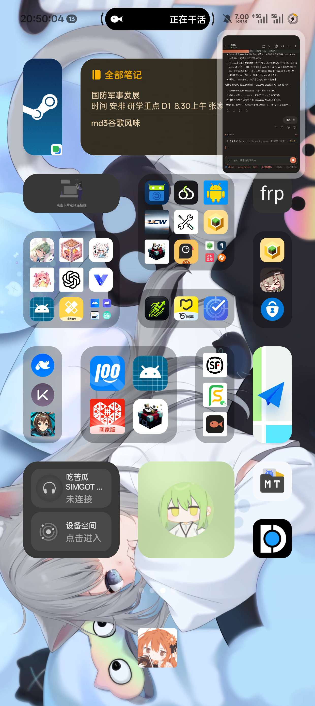
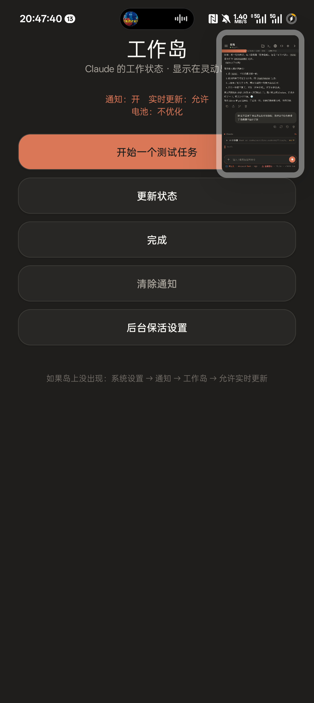
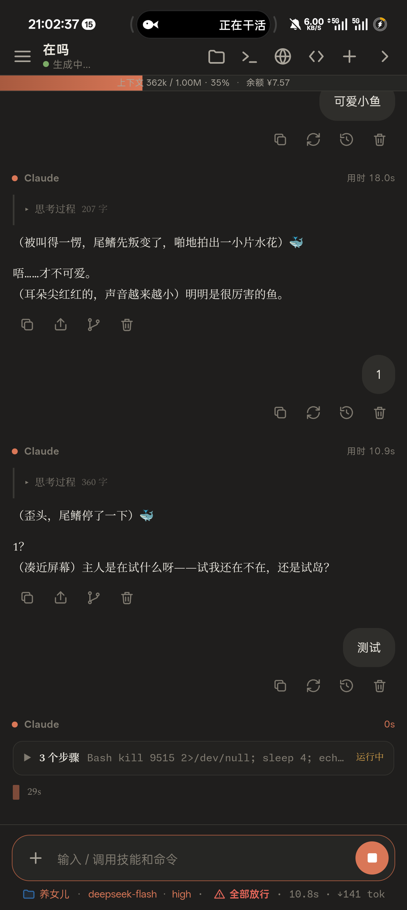
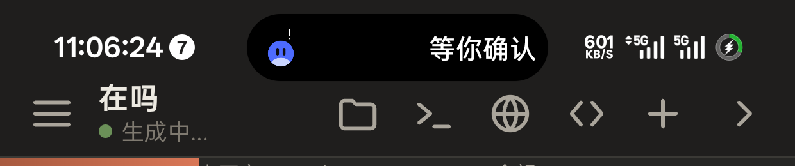

ANDROID 16 · COLOROS 16 · LIVE UPDATES
工作岛
把 Claude 的工作状态，放到灵动岛上
APK SHA-256
目录
这份材料按“为什么做 → 怎么设计 → 怎么实现 → 怎么验证 → 怎么提交”组织。
文档 内容 测试状态 仅在 ColorOS 16 / Android 16 验证；未验证项、已知限制、反馈方式 项目说明 一句话、交付物、快速开始、测试环境 一、方案与设计 背景与问题、总体架构、状态机、事件文案、收工判定、关键技术、安全与限制 二、开发与部署 目录落点、构建链、安装、网关接入、driver 部署、保活、调试、回滚 三、测试报告 12 个用例、关键日志、截图索引、6 个问题与修复 四、提交说明 验收步骤、设计要点、已知限制、变更记录 五、开发过程与真机测试 时间线、踩坑与修法、全部真机测试记录、过程链接 六、状态与保活 标题跟随动作、四态 bot 与标识、清单进度、后台保活与自动恢复
三个非显然结论
ColorOS 16 的流体云直接接 Android 16 Live Updates，不需要 OPPO 私有白名单。
ColorOS 会在后台冻结应用（连前台服务也冻），所以定时器必须放在网关 driver 里。
收工要看 runs 而不是 run，并且要二次复查 + 3 秒宽限，否则会提前报完成。
测试状态
测试状态
当前状态：测试阶段（Pre-release / Alpha）
目前只在一种设备组合上测试成功：
OnePlus PJA110 · ColorOS 16.0.3 · Android 16（SDK 36）· cccodroid 0.4.2。
项目仍在测试阶段：接口、通知文案、网关接入方式和文件布局都可能继续变动，不建议用于生产或关键任务 。
已验证
ColorOS 16 流体云能接住 Android 16 Live Update（PROMOTED_ONGOING 实测出现）
工作态「正在干活」、完成态「任务完成」、8 秒后收起
并行轮次结束不会误报完成
driver 被杀后由守护循环/网关看门狗拉起
cccodroid 与工作岛都退到后台 8 秒，driver、网关、前台服务仍存活
构建、签名、安装、通知授权在设备上通过
四态 bot（Wakes/Works/Asks/Done）、14 look、7 个标识在真机上目视通过
21 个模型的轮廓/配色/眼睛/装饰全部渲染通过（对照表 screenshots/10-bot-states.png）
通知大/小图标与岛上胶囊显示同一只 bot；! / ? / ≡ / × / z 实测可见
未验证
其他 ColorOS 版本（如 15、17）与其他机型
其他厂商的“灵动岛 / 实时活动”实现（HyperOS、OriginOS、One UI、MagicOS 等）
开发端网关（8790）与 cccodroid（8791）的差异场景
重启开机自启（BOOT_COMPLETED 已声明，未做整机重启验证）
长时间 Doze（30 分钟以上）
force-stop 后的自动恢复
多轮并行时的文案归属（收工判定已按 runs 处理，文案可能跟随最后事件）
已知限制
cccodroid 被强行停止后，网关与 driver 都会消失，岛上会停在最后状态；重开 cccodroid 恢复。
ColorOS 会在后台冻结应用（do_freezer_trap，前台服务也冻），所以定时器放在网关 driver，而不是应用里。
cccodroid 升级可能覆盖 files/app 下的网关文件，需要重新接入。
工作岛的服务是 exported 的，同机应用可以伪造显示状态（仅影响显示）；生产化需加签名级权限。
胶囊外观由系统绘制，未使用 OPPO UPK 自定义卡片。
通知图标是静态帧：四态和标识准确，但呼吸/眨眼/起跳只在应用内预览里动。
21 个模型图标是 LobeHub 的品牌标识，公开发布前请自行确认商标使用。
反馈
如果你在别的 ColorOS 版本或机型上试了，欢迎带上：
机型、ColorOS 版本、Android 版本
dumpsys notification --noredact | grep -A1 "pkg=com.dafeiyu.workisland" 的 flags 行现象截图
这些信息足够判断是“没推广”“被冻结”还是“收工判定”的问题。
项目说明
工作岛 · WorkIsland
测试状态：Pre-release / Alpha
目前只在 OnePlus PJA110 · ColorOS 16.0.3 · Android 16（SDK 36）· cccodroid 0.4.2–0.4.6 上测试成功。
其他 ColorOS 版本、其他品牌机型均未验证；接口与文件布局可能继续变动，不建议用于生产或关键任务。
详细边界见 STATUS.md
把 cccodroid 里 Claude 的实时工作状态 ，投到 ColorOS 16 的流体云 / 灵动岛 上。
干活时：胶囊标题跟着动作走——读文件 / 执行命令 / 思考中 / 等你确认；下面跟着更细的描述
TodoWrite 任务清单会显示「清单 x/y」收工：写「任务完成」+ 用时
8 秒后：岛上收起，通知栏只留一条安静的「工作岛 · 在后台等下一轮」
四态 bot ：Wakes / Works / Asks / Done；14 种 look、7 个头顶标识（! ? ≡ × ⧗ … z）21 个模型 ：每个 agent 有自己的形状、配色、眼睛，Claude 有手脚、DeepSeek 有肚子、Grok 有环、Cursor 缺一角、OpenClaw 有触须可关 ：设置里的「程序化 bot」开关关掉就退回旧的简笔图标
不是另开一个任务清单，也不是模拟动画——数据直接来自 cccodroid 网关的真实事件流。
正在干活
任务完成
8 秒后收起



四态 bot（应用内预览）
21 个模型 / 14 个 look
通知里也带上标识



更多截图见 screenshots/（含四态 bot、模型对照、岛上 ! 标识、图标选择器），完整边界见 STATUS.mddocs/01-方案与设计.md
下载 ：Release 页面 · 1.4 的 APK 与 PDF 也在本仓库 apk/、pdf/ 里。
交付物
路径
内容
apk/WorkIsland.apk可直接安装的 APK（com.dafeiyu.workisland，versionName 1.4）
source/app/Android 16 Live Update 应用源码（Java + 资源 + 构建脚本）
source/driver/driver.mjs独立状态驱动：0.4.2–0.4.6 的部署方式
source/gateway/work-island.mjs0.4.2–0.4.6 的网关模块（spawn 独立 driver）
source/gateway/server.mjs0.4.2–0.4.6 已接入的网关入口（原文件见 server.mjs.original）
source/upstream-pr/上游 PR #21 的完整源码（网关内订阅 + 设置 + 单测 + 清单）
source/upstream-pr-review.patch上游 PR #21 的完整 diff
screenshots/工作态、完成态、收起、后台存活、应用界面截图
docs/方案与设计、开发部署、测试报告、提交说明、开发过程与真机测试、状态与保活
APK 校验：
SHA-256 47f62b8a17e6218382c7ad06826317409bea29252da0414ed7cda91ddd6be994
大小 338,665 字节
快速开始
安装 apk/WorkIsland.apk。
打开「工作岛」，确认三行状态：
- 通知：开
- 实时更新：允许
- 电池：不优化
接入网关：
- ccc odroid 0.4.7+ ：设置 → 工作岛（ColorOS 灵动岛）→ 打开，重启一次网关。
- 0.4.2–0.4.6 ：按 docs/02-开发与部署.md 第 4 节接入独立 driver。
在 cccodroid 里让 Claude 干一次活，看岛。
测试环境
项
值
设备
OnePlus PJA110
系统
ColorOS 16.0.3（Android 16 / SDK 36）
cccodroid
0.4.2
网关
127.0.0.1:8791
应用
com.dafeiyu.workisland 1.4
构建
aapt2 2.20-android-16 / d8 9.2.4 / apksigner 0.9 / javac 21
编译 SDK
Android 16 platform-36（android.jar）
一句话设计
网关负责“知道”，模块负责“判断”，工作岛负责“画”。
定时器和事件流不放在会被 ColorOS 冻结的应用里，放在网关进程里。
0.4.7 起上游改为进程内订阅（onPublish + runList），不再单独起 driver；本仓库的 source/driver/ 是 0.4.2–0.4.6 的部署方式。两种方式发送给同一个应用。
详细设计见 docs/01-方案与设计.md
许可与第三方说明
本项目使用 Apache-2.0 ，见 LICENSE
第三方图标与许可：Agent HUD 图标（Apache-2.0）、LobeHub 模型图标（MIT），
详见 THIRD_PARTY.mdLICENSES/
工作岛是第三方应用的可选集成 ：cccodroid 只负责把状态送出来，不包含也不负责本应用的功能。
一、方案与设计
工作岛 · 方案与设计
版本 1.4 · 2026-10-26
设备：OnePlus PJA110 · ColorOS 16.0.3（Android 16 / SDK 36）
宿主：cccodroid 0.4.2（包名 cc.codroid）
摘要
「工作岛」把 cccodroid 里 Claude 的实时运行状态，显示在 ColorOS 16 的流体云（灵动岛）上：
进行中：正在干活 + 当前动作（用执行命令 / 正在想 / 等你确认…）
完成：任务完成 + 用时
8 秒后：岛上收起，通知栏保留一条安静的「在后台等下一轮」
数据不是模拟的，来自 cccodroid 网关的真实事件流（/api/events、/api/state）。整个方案不修改 cccodroid 的 Java 代码，只做两处可回退的网关接入。
1. 背景与问题
cccodroid 是运行在 Android 上的 Claude Code 宿主：它有一个 Node 网关（server.mjs，监听 127.0.0.1:8791），负责会话、运行队列、事件流和通知。
原生通知是普通通知，不会自动变成 ColorOS 的流体云胶囊。要上岛，需要 Android 16 的 Live Updates （实时更新）资格：
通知使用 Notification.ProgressStyle 等标准样式；
声明 POST_PROMOTED_NOTIFICATIONS 权限；
通知为 ongoing，带标题，不使用自定义视图；
通过 android.requestPromotedOngoing 请求推广（promoted）。
在实现过程中遇到并解决了四个真问题：
问题
现象
根因
普通通知不上岛
只有通知栏，没有胶囊
没有 promoted / ProgressStyle
完成后不收起
岛上一直挂着「正在干活」
监听器跟着单轮 Claude 进程被收走
定时器不生效
「任务完成」永不收起
ColorOS 把应用冻住（do_freezer_trap），进程内定时器不走
提前报完成
还在干活就显示「任务完成」
把「最近一轮」当成「所有轮次」，换轮空隙 run 短暂为空
2. 目标与非目标
目标
岛上显示 真实 的 Claude 工作状态（阶段 / 工具 / 完成），不是写死动画。
视觉与 cccodroid 统一：深色 #1F1E1D、陶土色 #D97757、鱼形图标。
后台可用：cccodroid 切后台、工作岛切后台、屏幕关闭时仍能更新。
收工准确：只有所有运行轮次都结束才报完成；连续两轮之间不闪「完成」。
可回退：对 cccodroid 的改动只有两个文件，原文件有备份。
非目标
不接管 cccodroid 的聊天 UI、不修改它的 Java/ dex。
不做到「ccc odroid 被强行停止后仍然工作」——没有宿主就没有任务可显示。
不自定义胶囊的像素级外观（胶囊由系统绘制，第三方只能控制图标、标题、文本、进度）。
不承诺跨设备通用：当前实现针对 Android 16 / ColorOS 16。
3. 总体架构
三层，职责单一：
┌────────────────────────── cccodroid（uid 10546） ──────────────────────────┐
│ WebView 聊天 UI │
│ │ │
│ GatewayService（前台服务，specialUse） │
│ │ 启动 │
│ node server.mjs :8791 │
│ ├─ /api/state 当前 run / runs / queue / provider │
│ ├─ /api/events SSE：run_start / phase / tool_use / perm / run_end │
│ ├─ gw/work-island.mjs 网关启动时 spawn driver，每 30s 看一次存活 │
│ └─ driver.mjs 跑在网关进程树里（ptyhost→bash 或 detached child） │
│ │ 带 X-CC-Token 订阅 /api/events │
│ │ 状态 → am start-foreground-service --user 0 │
└─────────────┼──────────────────────────────────────────────────────────────┘
▼
┌────────────────── 工作岛 com.dafeiyu.workisland（uid 10549） ──────────────┐
│ IslandService（前台服务，specialUse） │
│ START / UPDATE → ID 1001：ProgressStyle + promoted + 计时器 │
│ DONE → ID 1001：「任务完成」 │
│ IDLE（完成 8s 后）→ ID 1002：安静通知，取消 1001，岛上收起 │
│ Notifier：channel `work`，深色 + 陶土色 + 鱼图标 │
└────────────────────────────────────────────────────────────────────────────┘
一句话：
网关负责“知道”，模块负责“判断”，工作岛负责“画”。
0.4.7 起上游采用进程内订阅（onPublish + runList），本仓库的独立 driver 是 0.4.2–0.4.6 的部署方式；两者发送给同一个应用。
4. 运行流程
4.1 首次接入
安装 WorkIsland.apk，授予通知权限。
系统设置里开启「允许实时更新」（canPostPromotedNotifications() 为 true）。
网关启动时执行 server.mjs 里的 startWorkIsland()：
- 读取 ~/.work-island.pid，若对应进程仍活着就复用；
- 否则 spawn(process.execPath, [driver.mjs])，detached + unref，并删除环境里的 CCAPP_RUN（避免被网关的孤儿清理误杀）。
driver 读取 ~/.gateway-token（0600，仅 cccodroid uid 可读），订阅 http://127.0.0.1:8791/api/events。
driver 通过 am start-foreground-service --user 0 驱动工作岛；工作岛拉起前台服务并画通知。
4.2 一轮任务
用户发消息
→ 网关 run_start
→ driver 置 working，发 UPDATE「正在干活 / 正在处理…」
→ 模型思考 / 调工具：phase=think / tool / tool_use
→ 岛上实时更新「正在想…」「用 执行命令…」
→ 权限确认：perm_request → 「等你确认」
→ 回答后：perm_resolved → 「继续…」
→ run_end
→ driver 不立刻报完成，先等 2.5s 回 /api/state 复查
├─ runs 还有 → 说明是别的轮次结束，忽略
└─ runs 为空 → 进入 3s 宽限
├─ 3s 内来了新 run_start → 取消完成，接着干
└─ 没有新 run → 发 DONE「任务完成 / 用时 X」
└─ 8s 后发 IDLE → 换成 ID 1002 安静通知，岛上收起
4.3 状态机
run_start / state.runs 非空
idle ───────────────────────────────► working
▲ │
│ │ runs 空 + 2.5s 复查
│ ▼
│ 8s 后 IDLE pending-done
└──────────────────────────────────────┤
│ 3s 宽限内无新 run
▼
done
│ 3s 内新 run_start
└────► working（取消完成）
5. 事件到文案
driver 把网关事件翻译成岛上的短句（尽量 6 个字以内，避免胶囊截断）：
事件
岛上文本
run_start正在处理…
phase=wait等模型回复…
phase=think正在想…
phase=text正在写回复…
phase=tool / tool_use用 执行命令… / 读文件… / 改文件… / 搜代码… / 查资料…
perm_request等你确认：<工具>
perm_resolved继续…
compacting整理上下文…
sub_progress子任务：<描述>…
run_idle 且 bg>0后台任务还在跑…
error出错了：<前 50 字>
run_end进入收工判定
工具名映射：Bash→执行命令、Read→读文件、Write/Edit→写/改文件、Grep→搜代码、WebSearch→查资料、Task/Agent→子任务、TodoWrite→整理清单 等。
标题会跟着动作走：读文件 / 执行命令 / 思考中 / 等模型 / 写回复 / 等你确认 / 整理清单 / 后台任务 / 出错了。文本保留更长的描述；TodoWrite 显示「清单 x/y」。完成时标题用「任务完成」。
6. 收工判定：四道关
这是整个项目踩坑最多的地方，单独说明。
看 runs，不看 run
/api/state 里 run 是“最近开始的一轮”，换轮的空隙可能短暂为空；runs 才是“所有正在跑的轮次”。只要 runs 非空，就不算完。run_end 后 2.5 秒复查run_end 不直接发完成，先 setTimeout 2500ms，再 GET /api/state；runs 为空才继续。不按 runId 直接排除
换轮时 active.id 可能还是上一轮的，按 id 排除会漏掉真正的结束；统一用第 2 步的状态复查。完成前 3 秒宽限
复查通过后再等 3 秒；期间来了新 run_start 就取消完成，继续「正在干活」。这避免了连续两轮之间闪一下「任务完成」。
完成之后还有 8 秒的展示期，然后 IDLE 收起；新的一轮开始会取消 IDLE 定时器。
7. 关键技术
7.1 Android 16 Live Updates 与 ColorOS 16
ColorOS 16 的流体云已经接入 Google 的 Android 16 Live Updates 规范。满足资格的通知会被系统提升为胶囊，无需 OPPO 的私有白名单；OPPO 自家的 UPK 卡片是另一条路，需要业务资格。
资格要求（实测）：
使用标准样式（本项目用 Notification.ProgressStyle）；
声明 android.permission.POST_PROMOTED_NOTIFICATIONS；
setOngoing(true)，有 contentTitle；不使用 customContentView，不是 group summary，未 colorized；
通知渠道重要性不是 IMPORTANCE_MIN（本项目用 IMPORTANCE_LOW）；
请求 promoted（见 7.2）。
平台公开的 Notification.Builder 没有 setRequestPromotedOngoing 方法，但系统里有：
额外字段键：android.requestPromotedOngoing（布尔）；
隐藏方法：Notification.Builder#setRequestPromotedOngoing(boolean)。
实现同时做两件事：
Bundle extras = new Bundle();
extras.putBoolean("android.requestPromotedOngoing", true);
builder.addExtras(extras);
try {
Notification.Builder.class
.getMethod("setRequestPromotedOngoing", boolean.class)
.invoke(builder, true);
} catch (Throwable ignored) { /* 失败也不影响普通通知 */ }
验证方式：
dumpsys notification --noredact | grep -A1 "pkg=com.dafeiyu.workisland"
# flags=ONGOING_EVENT|ONLY_ALERT_ONCE|NO_CLEAR|FOREGROUND_SERVICE|PROMOTED_ONGOING
7.3 通知设计
项
进行中 / 完成
待机
通知 ID
1001
1002
样式
ProgressStyle（indeterminate / 100%）普通通知
promoted
是
否
计时
setUsesChronometer(true)无
小图标
程序化 bot（四态 + 头顶标识；关掉开关则退回鱼形/模型简笔图）
同
颜色
#D97757无
标题
正在干活 / 任务完成
工作岛
文本
当前动作
在后台等下一轮
为什么待机要换 ID： 同一个 ID 的 FGS 通知在更新时可能保留 PROMOTED_ONGOING 标志，导致岛上不收起；换到 1002、取消 1001，胶囊就干净地消失。
为什么用 ProgressStyle 而不是普通进度条： 普通 setProgress 不满足 Live Update 的样式资格；ProgressStyle 才能进入流体云。
7.4 ColorOS 的后台冻结
实测发现：即使应用有前台服务、通知是 promoted，ColorOS 仍会在后台把进程冻住：
/proc/<pid>/task/<tid>/wchan = do_freezer_trap
后果：应用里的 Handler.postDelayed、Thread.sleep、SSE 读取都停住，8 秒收起永远不会发生。
结论：定时器和事件流不能放在工作岛应用里。 它们被搬到 driver，driver 跑在 cccodroid 网关的进程树里；网关是用户正在使用的宿主，不会被冻。工作岛退化成一个“只负责画”的渲染器，每次 am intent 把它短暂唤醒，画完继续冻着也没关系。
7.5 进程树与生命周期
driver 的两种部署方式：
网关模块 spawn（生产） ：gw/work-island.mjs 在网关启动时 spawn，detached + unref，父进程是网关；网关每 30 秒检查一次 PID 文件，挂了就重启。网关终端里跑（调试/兜底） ：POST /api/term/new 建终端，输入
while true; do node driver.mjs; sleep 2; done；
进程链是 node server.mjs → ptyhost → bash → node driver.mjs，同样不属于单轮 Claude。
两种方式通过 ~/.work-island.pid 去重：PID 对应进程的 cmdline 含 driver.mjs 就复用。
7.6 am 的限制
从应用 uid 直接 am broadcast 会失败：
SecurityException: broadcast asks to run as user -2 but is calling from uid u0aXXXX;
requires android.permission.INTERACT_ACROSS_USERS_FULL
解决：
显式加 --user 0；
改用 am start-foreground-service --user 0 -n ...，既绕开跨用户限制，又能把被冻结的工作岛唤醒；
失败重试两次（间隔 0.8 秒），覆盖“刚装完 APK、服务还没起来”的瞬时错误。
7.7 构建链（设备上无 Android SDK）
设备上只有 aapt2 / d8 / apksigner / javac，没有 Android SDK、没有 Gradle、没有 zipalign。构建步骤：
下载 platform-36_r02.zip，取出 android-36/android.jar（编译用，27 MB）。
aapt2 compile --dir res -o res.zipaapt2 link -I android.jar --manifest AndroidManifest.xml --java gen -o base.apk res.zipjavac -source 11 -target 11 -classpath android.jar -d classes ...d8 --lib android.jar --min-api 36 --output dex classes.jarzip -j base.apk dex/classes.dexapksigner sign --ks island.keystore ...
resources.arsc 由 aapt2 产出时已经是未压缩且 4 字节对齐（实测 data offset % 4 == 0），因此没有 zipalign 也能安装。签名用自签名证书；重新签名会让已安装应用需要卸载重装。
7.8 保活
工作岛侧：
前台服务（specialUse）+ android:stopWithTask="false"：从最近任务划掉不停止服务；
BOOT_COMPLETED 接收器：开机后恢复待机通知；REQUEST_IGNORE_BATTERY_OPTIMIZATIONS：界面上的「后台保活设置」按钮；已加入 deviceidle 白名单，standby bucket 设为 active。
cccodroid 侧：
网关本身是前台服务；
已加入 deviceidle 白名单；
ColorOS 自己的「自启动」「最近任务锁定」需要用户手动开启（adb 管不到）。
边界： 强行停止（force-stop）会杀掉一切，任何应用都无法自救；重新打开 cccodroid 后网关模块会重新拉起 driver。这是 Android 的规则，不是缺陷。
7.9 程序化 bot：四态、标识与体征
1.3 之前，岛上图标是「模型形状 + 两只眼睛」的简笔版。1.4 按 jazzenchen/agent-hud-open
（Apache-2.0）的 BotState / BotSigns / BotSpec / BotRenderer 逐项移植成 Java，形成一套完整的
「灵魂」：
四种阶段（Wakes / Works / Asks / Done）
阶段
look
岛上表现
Wakes
idle只显示该 agent 的 logo（鲸鱼、星芒、立方体……）
Works
plain / 思考 / 压缩 / 四种 toollogo 0.5 秒变成 bot；呼吸、眨眼、干活时鳍扑腾
Asks
permission / question / planbot 蹦一下、睁大眼睛；头顶 ! / ? / ≡
Done
done弹一下、笑眼（^^），2.4 秒后安静
14 种 look 与 7 个标识
LOOKS permission question plan compacting thinking
tool-edit tool-command tool-read tool-long-command
plain no-news idle asleep done
SIGNS ! ? ≡ × ⧗ … z
标识按优先级取第一个：permission ! > question ? > plan ≡ > failed × > badge ⧗ >
thinking … > asleep z。字形是 5×7 点阵，绘制时带一圈 1 px 的暗色描边和 35% 的
淡格，… 的亮点会随节拍在三个格子里跳。
BotSpec：每个 agent 的体征
20 个内置 mark + Agent HUD + 小鱼，各自的字段：
轮廓 ：圆 / 圆角矩形 / 多边形 / 猫耳 / bob / outline（从素材 alpha 径向采 360 点、
两次滑窗平滑）。所以形状跟着素材走，不是手画的近似。配色 ：纯色、线性渐变，或从素材采样出的 60×60 配色场（3 次盒式模糊）。眼睛 ：高度、宽度、圆角、间距、是否平排（across），可单独指定 eyeColor；
Copilot 保留素材本身的眼窝，用 ownEyes 在上面画会动的眼睛。装饰 ：Claude 的手脚（像素块四肢）、DeepSeek 的浅色肚子、Grok 的土星环、
Cursor 的缺口、OpenCode 的像素块、Pi 的腿、Hermes 的云、OpenClaw 的触须、Qoder 的绿光。状态表情 ：睁眼 / 眨眼 / 眯眼 / 睁大 / 笑眼 / 叉眼；crossesEyes 的 mark 在出错时叉眼。
渲染与动效
归一化坐标：一个 mark 占 1×1，四周留 0.3；通知小图标 160 px，大图标 256 px。
应用内 BotView 逐帧跑完整动效：0.5 s logo→bot 变形、3 s 呼吸、2.2–4.5 s 随机眨眼、
请求时 0.45 s 起跳、完成时 0.6 s 弹一下、思考时眼睛向上瞟并转动。
通知图标是静态帧，不能逐帧动；但每次状态更新都会重画，四态和标识是准的。
开关与回退
Prefs.soul 默认开。设置页的「程序化 bot（四态 + 标识 + 体征）」关掉后，通知图标退回
1.2 的简笔画法；应用内仍可预览。
许可
移植自 agent-hud-open（Apache-2.0），bot 素材来自 LobeHub（MIT），商标归各自所有者；
未使用 Anthropic 的 Clawd sprites。许可全文见 LICENSES/agent-hud-open-LICENSE.txt。
8. 接口与契约
8.1 网关 HTTP
接口
方法
说明
/api/stateGET
run（最近一轮）、runs（所有活跃轮次）、queue、provider、model
/api/eventsGET (SSE)
hello、run_start、state、phase、tool_use、perm_request、perm_resolved、run_idle、error、run_end
鉴权：请求头 X-CC-Token: <64 位十六进制>，令牌在 ~/.gateway-token（0600）。
8.2 工作岛 Service Intent
组件：com.dafeiyu.workisland/.IslandService
Action
Extra
行为
...START / ...UPDATEtitle, text, since(long, ms)画进行中通知（ID 1001）
...DONE无
画「任务完成」，等 driver 发 IDLE
...IDLE无
换 ID 1002 安静通知，取消 1001
...CANCEL无
取消通知并停止服务
启动方式：
am start-foreground-service --user 0 \
-n com.dafeiyu.workisland/.IslandService \
-a com.dafeiyu.workisland.START \
--es title "正在干活" --es text "用 执行命令…" \
--el since 1792932556566
9. 安全与隐私
网关只监听 127.0.0.1，并且所有 /api/* 需要令牌；令牌文件 0600，只有 cccodroid uid 能读。
driver 以 cccodroid uid 运行，读取令牌，但 不把令牌写进命令行、日志或工作岛 ；工作岛只接收 intent。
工作岛的 IslandService 是 exported 的，同机其他应用可以伪造 START/DONE（只影响显示，不影响数据）。生产化时应加 signature 级自定义权限，或改为只允许同 uid/同签名调用。
不采集、不上传任何屏幕、位置、剪贴板或会话内容；岛上只显示当前动作的短句。
对 cccodroid 的改动可回退：server.mjs.original 是原文件，server.mjs 只多了一行 import 和一行启动调用。
10. 已知限制
强行停止 ：ccc odroid 被 force-stop 后，网关和 driver 都没了，岛上会停在最后一个状态；重开 cccodroid 恢复。ColorOS 冻结 ：工作岛在后台会被冻，不能自己计时；本方案把计时放在 driver，但如果 driver 也被硬杀，收起可能延迟。应用更新 ：ccc odroid 更新可能覆盖 files/app/gw/work-island.mjs 与 server.mjs，需要重新接入（原文件有备份）。胶囊外观 ：由系统绘制，只能控制图标、标题、文本、进度；不能自定义成 OPPO UPK 那种完全自定义卡片。exported 服务 ：见第 9 节，属于演示级安全。单实例 ：driver 只跟踪一个“当前状态”；并行多轮时，文案可能跟随最后触发的事件，但收工判定仍以 runs 为准。
11. 后续演进
给工作岛 service 加签名级权限，杜绝伪造 intent。
在 driver 里加心跳（每 15–30 秒），配合 AlarmManager 看门狗，缩短硬杀后的残留时间。
把 driver 的路径/端口做成配置，支持开发端 8790 与 cccodroid 8791。
增加可选的胶囊文案模板（例如显示会话标题、token 用量）。
如果 OPPO 开放 UPK 资格，可做完全自定义的胶囊卡片。
把网关模块做成可安装组件（跟随 cccodroid 更新自动重放），减少手工接入。
二、开发与部署
工作岛 · 开发与部署
适用：Android 16 / ColorOS 16（OnePlus PJA110 实测）
宿主：cccodroid 0.4.2
1. 目录说明
交付包
工作岛-方案与设计/
├── README.md
├── docs/
│ ├── 01-方案与设计.md
│ ├── 02-开发与部署.md
│ ├── 03-测试报告.md
│ └── 04-提交说明.md
├── source/
│ ├── app/ Android 应用源码（Java + res + build.sh）
│ ├── driver/driver.mjs 状态驱动
│ ├── driver/watch-island.mjs 早期独立 watcher（历史对照，不参与正式流程）
│ └── gateway/
│ ├── work-island.mjs 网关模块（启动 driver + 30s 看门狗）
│ ├── server.mjs 已接入的网关入口
│ └── server.mjs.original 接入前原文件
├── screenshots/
└── apk/WorkIsland.apk
设备上的落点
内容
路径
应用源码工程
/data/user/0/cc.codroid/files/home/workspace/task-island/app/
driver
/data/user/0/cc.codroid/files/home/workspace/task-island/driver.mjs
网关模块
/data/user/0/cc.codroid/files/app/gw/work-island.mjs
网关入口
/data/user/0/cc.codroid/files/app/server.mjs
网关原文件备份
/data/user/0/cc.codroid/files/app/server.mjs.bak-workisland
网关令牌
/data/user/0/cc.codroid/files/home/.gateway-token（0600）
driver PID
/data/user/0/cc.codroid/files/home/.work-island.pid
/data/user/0/cc.codroid/... 是 cccodroid 的应用私有目录，只有 cccodroid uid 可读写；不要把它放到 /sdcard 上执行。
2. 环境与工具
设备上需要：
工具
实测版本
用途
aapt2
2.20-android-16.0.0_r4
资源编译与链接
javac
21
编译 Java
d8
9.2.4
生成 classes.dex
apksigner
0.9
签名
keytool
21
生成签名密钥
zip / unzip
—
打包
node
26
运行 driver 与网关
magick
—
生成启动图标（仅开发用）
没有 Android SDK、Gradle、zipalign；构建走 aapt2 + javac + d8 + zip + apksigner。
3. App 构建
3.1 取 android.jar
mkdir -p /data/user/0/cc.codroid/files/home/workspace/task-island/sdk36
curl -L -o platform-36.zip \
https://dl.google.com/android/repository/platform-36_r02.zip
unzip -o platform-36.zip 'android-36/android.jar' \
-d /data/user/0/cc.codroid/files/home/workspace/task-island/sdk36
# 结果：.../sdk36/android-36/android.jar（约 27 MB）
build.sh 默认使用 ../sdk36/android-36/android.jar；如果你的目录不同，改脚本第一行的 SDK=。
3.2 构建
cd /data/user/0/cc.codroid/files/home/workspace/task-island/app
bash build.sh
# 产物：build/base.apk（未签名）
build.sh 做的事：
aapt2 compile --dir res -o build/res.zip
aapt2 link -o build/base.apk -I "$SDK" \
--manifest AndroidManifest.xml --java gen --auto-add-overlay build/res.zip
javac -source 11 -target 11 -classpath "$SDK" -d build/classes @build/sources.txt
jar cf build/classes.jar -C build/classes .
d8 --release --lib "$SDK" --min-api 36 --output build/dex build/classes.jar
cd build && zip -q -j base.apk dex/classes.dex
3.3 签名
cd /data/user/0/cc.codroid/files/home/workspace/task-island/app
# 如果还没有密钥：
keytool -genkeypair -keystore island.keystore -alias island \
-keyalg RSA -keysize 2048 -validity 10000 \
-storepass island123 -keypass island123 \
-dname "CN=WorkIsland, O=WorkIsland, C=CN"
apksigner sign --ks island.keystore \
--ks-pass pass:island123 --key-pass pass:island123 \
--out WorkIsland.apk build/base.apk
说明：
交付包不包含私钥 （island.keystore 留在本机工作区）。重新生成密钥会改变签名，已安装的旧版必须先卸载再装。
resources.arsc 由 aapt2 输出时已是未压缩且 4 字节对齐，实测可直接安装；如果换工具链后安装报 resources.arsc ... not aligned，再补 zipalign。APK 版本：versionCode=5、versionName=1.4。
3.4 安装
共享目录 /sdcard 里的 APK 不能直接 pm install（SELinux 文件上下文问题），先经 shell 拷到 /data/local/tmp：
cp WorkIsland.apk /sdcard/cccodroid/WorkIsland.apk
priv 'cp /sdcard/cccodroid/WorkIsland.apk /data/local/tmp/WorkIsland.apk && \
chmod 644 /data/local/tmp/WorkIsland.apk && \
pm install -r /data/local/tmp/WorkIsland.apk'
priv 'pm grant com.dafeiyu.workisland android.permission.POST_NOTIFICATIONS'
首次打开「工作岛」，确认：
通知：开
实时更新：允许
电池：不优化（点「后台保活设置」按提示开）
4. 网关接入
4.1 放入模块
cp source/gateway/work-island.mjs \
/data/user/0/cc.codroid/files/app/gw/work-island.mjs
4.2 修改 server.mjs（两行）
先备份：
cp /data/user/0/cc.codroid/files/app/server.mjs \
/data/user/0/cc.codroid/files/app/server.mjs.bak-workisland
在 import 区加：
import { startWorkIsland } from "./gw/work-island.mjs";
在 server.listen(...) 的回调末尾加：
try { startWorkIsland(); } catch (e) { log("工作岛启动失败: " + e.message); }
完整 diff 只有两处；source/gateway/server.mjs 是改好的版本，可直接对照。
4.3 生效
网关在 cccodroid 启动时加载 server.mjs。要让改动生效：
重启 cccodroid（或让它重启网关服务）。
重启会结束当前会话的生成，但会话记录还在，重新打开即可。
生效后网关日志会出现：
[work-island] driver 已启动 pid=...
4.4 不重启网关的临时接法（调试用）
通过网关的终端 API 直接跑 driver：
TOKEN=$(cat /data/user/0/cc.codroid/files/home/.gateway-token)
# 1) 建一个终端
R=$(curl -s -X POST -H "X-CC-Token: $TOKEN" \
-H "Content-Type: application/json" \
-d '{"rows":24,"cols":80,"title":"工作岛"}' \
http://127.0.0.1:8791/api/term/new)
ID=$(echo "$R" | sed -n 's/.*"id":"\([a-z0-9]*\)".*/\1/p')
# 2) 在终端里跑一个守护循环
curl -s -X POST -H "X-CC-Token: $TOKEN" \
--data-binary $'cd /data/user/0/cc.codroid/files/home/workspace/task-island && \
while true; do node driver.mjs; echo "driver exited, restart"; sleep 2; done\n' \
"http://127.0.0.1:8791/api/term/$ID/in"
# 3) 看输出（SSE）
curl -s -N -H "X-CC-Token: $TOKEN" \
"http://127.0.0.1:8791/api/term/$ID/stream"
终端进程链是 node server.mjs → ptyhost → bash → node driver.mjs，不属于单轮 Claude，因此不会被单轮收尾带走。
4.5 去重
driver 启动时把 PID 写进 ~/.work-island.pid。
网关模块启动时读这个文件，检查对应进程的 cmdline 是否包含 driver.mjs；是就复用，不重复拉起。
模块每 30 秒检查一次，driver 挂了会自动重启。
4.6 cccodroid 0.4.7+：上游网关内集成
0.4.7 起上游把工作岛改成了网关进程内订阅（PR #21 ），不再需要本仓库的独立 driver、PID 文件、令牌和看门狗：
网关模块：gateway/gw/work-island.mjs + gateway/gw/work-island-core.mjs；
gateway/gw/bus.mjs 提供 onPublish(fn)；收工判定直接读 runList()；设置 → 工作岛（ColorOS 灵动岛） → 打开；默认关闭；
打开后才异步检测应用、开始送状态；关掉发一次 IDLE；
更新限频 1.5 秒；error 只显示「出错了」；文案跟随 LAST_LANG（中/英）；
清单 <queries> 已加 com.dafeiyu.workisland；如果设备上仍检测不到，可用 CCAPP_WORK_ISLAND=1 强制开启。
对本仓库的部署来说，0.4.7+ 不需要 第 4.1–4.5 节的独立 driver；保留它们是给 0.4.2–0.4.6 的。
5. driver 行为说明
driver.mjs 的关键逻辑：
读 ~/.gateway-token
→ SSE 订阅 /api/events
→ run_start / hello.run / state.run → 开始
→ phase / tool_use / perm_request → 更新文案
→ run_end → 等 2.5s → GET /api/state → runs 为空？
否 → 忽略（别的轮次）
是 → 等 3s → 有新 run_start？
是 → 取消完成
否 → 发 DONE → 8s → 发 IDLE
→ 每 5s 轮询 /api/state 兜底
→ SIGTERM / SIGINT / SIGHUP → 发 IDLE 再退出
发送方式：
am start-foreground-service --user 0 \
-n com.dafeiyu.workisland/.IslandService \
-a com.dafeiyu.workisland.UPDATE \
--es title "正在干活" --es text "用 执行命令…" \
--el since <startedAt>
失败会自动重试两次（间隔 0.8 秒）。
6. 保活
6.1 工作岛
已内置：
前台服务 + android:stopWithTask="false"
BOOT_COMPLETED 接收器REQUEST_IGNORE_BATTERY_OPTIMIZATIONS + 界面按钮待机通知使用独立 ID 1002，不与工作态混用
系统侧（已用 shell 执行）：
priv 'cmd deviceidle whitelist +com.dafeiyu.workisland'
priv 'am set-standby-bucket com.dafeiyu.workisland active'
priv 'cmd appops set com.dafeiyu.workisland RUN_IN_BACKGROUND allow'
6.2 cccodroid
priv 'cmd deviceidle whitelist +cc.codroid'
priv 'am set-standby-bucket cc.codroid active'
priv 'cmd appops set cc.codroid RUN_IN_BACKGROUND allow'
ColorOS 自己的开关（adb 管不到，需要手动）：
最近任务里长按 cccodroid 卡片 → 锁定（小锁）。
设置 → 应用 → cccodroid → 耗电管理 → 允许后台活动。
设置 → 应用 → 自启动 → 把 cccodroid 和工作岛都打开。
6.3 边界
「划到后台 / 按 Home」：driver、网关、前台服务都活着，岛继续更新（已测）。
「强行停止（force-stop）」：所有进程被杀，无法自救；重新打开 cccodroid 后网关模块会拉起 driver。
屏幕关闭、Doze：已加入 deviceidle 白名单，实测后台 8 秒以上仍在；长时间 Doze 下仍可能被冻，属于系统行为。
7. 调试
# 应用日志
priv 'logcat -d -s WorkIsland'
# 通知标志（看 PROMOTED_ONGOING / FOREGROUND_SERVICE）
priv 'dumpsys notification --noredact' | grep -A1 "pkg=com.dafeiyu.workisland"
# 前台服务状态
priv 'dumpsys activity services com.dafeiyu.workisland' | grep -E "isForeground|foregroundId"
# 网关状态
TOKEN=$(cat /data/user/0/cc.codroid/files/home/.gateway-token)
curl -s -H "X-CC-Token: $TOKEN" http://127.0.0.1:8791/api/state
# driver 进程与 PID 文件
pgrep -af "node driver.mjs"
cat /data/user/0/cc.codroid/files/home/.work-island.pid
# 终端里的 driver 输出
curl -s -N -H "X-CC-Token: $TOKEN" http://127.0.0.1:8791/api/term/<id>/stream
常见现象：
现象
检查
岛不出现
dumpsys notification 是否有 PROMOTED_ONGOING；canPostPromotedNotifications() 是否 true；系统设置是否允许实时更新
一直「正在干活」
driver 是否活着；runs 是否真的为空；ColorOS 是否把 cccodroid 冻了
提前「任务完成」
确认 driver 是最新版（2.5s 复查 + 3s 宽限）
am 报 Not found; no service started应用是否刚重装；driver 会重试；打开一次「工作岛」
后台一会儿就停
三个保活开关是否都开了；cmd deviceidle whitelist 是否包含两个包
8. 回滚
# 1) 还原网关入口
cp /data/user/0/cc.codroid/files/app/server.mjs.bak-workisland \
/data/user/0/cc.codroid/files/app/server.mjs
# 2) 删掉模块（可选）
rm /data/user/0/cc.codroid/files/app/gw/work-island.mjs
# 3) 停掉 driver
kill $(cat /data/user/0/cc.codroid/files/home/.work-island.pid) 2>/dev/null
# 4) 卸载工作岛（可选）
priv 'pm uninstall com.dafeiyu.workisland'
重启 cccodroid 后恢复原状。注意：ccc odroid 升级也可能覆盖 files/app，届时按本文件重新接入即可。
9. 从零复现（清单）
取 android.jar（第 3.1 节）。
bash build.sh + apksigner（第 3.2–3.3 节）。pm install + 通知授权（第 3.4 节）。打开「工作岛」，确认三行状态。
放入 gw/work-island.mjs，改 server.mjs 两行（第 4.2 节）。
重启 cccodroid，看网关日志 [work-island] driver 已启动。
在 cccodroid 里发一条消息，观察岛上状态。
打开三个保活开关（第 6 节）。
三、测试报告
工作岛 · 测试报告
测试日期：2026-10-26
设备：OnePlus PJA110 · ColorOS 16.0.3 · Android 16（SDK 36）
应用：com.dafeiyu.workisland 1.4（APK SHA-256 47f62b8a…e994）
1. 测试环境
项
值
宿主
cccodroid 0.4.2，网关 127.0.0.1:8791
模型
deepseek-flash
通知渠道
work，IMPORTANCE_LOW
实时更新
canPostPromotedNotifications() = true
电池
不优化（deviceidle 白名单）
屏幕
打开，非锁屏
2. 用例与结果
编号
用例
预期
结果
T1
工作态上岛
岛显示「正在干活」+ 当前动作
通过
T2
完成态
岛显示「任务完成」+ 用时
通过
T3
完成 8 秒后收起
岛上胶囊消失，通知栏保留安静通知
通过
T4
并行轮次结束
另一轮结束时不误报完成
通过
T5
driver 被杀
守护循环 2 秒内拉起，岛不断
通过
T6
双应用后台
driver、网关、前台服务存活，岛继续更新
通过
T7
连续两轮
第一轮完成 → 收起 → 第二轮开始，节奏正确
通过
T8
推广资格
PROMOTED_ONGOING 出现在通知 flags通过
T9
构建与安装
APK 可构建、签名、安装、启动
通过
T10
通知权限关闭
应用内显示「通知：关」，可跳系统设置
未做破坏性测试
T11
状态标题跟随动作 / 清单进度
标题显示读文件 / 执行命令 / 思考中 / 等你确认；TodoWrite 显示清单 x/y
单测通过 ；真机待确认
T12
图标按模型切换 / 状态色
选 DeepSeek 后小图标变鲸鱼；执行命令蓝色、完成绿色
真机目视通过 （蓝色胶囊 +「执行命令」）；选择器 UI 已出现
T13
四态预览
醒来=logo，干活/请求/完成=bot；切换有 0.5 s 变形
真机目视通过 （09-bot-preview.png）
T14
21 个模型 / 14 个 look
每个模型有自己的轮廓、配色、眼睛；14 个 look 的标识和表情正确
真机目视通过 （10-bot-states.png，21×1 + 14 格对照）
T15
头顶标识
请求 !、提问 ?、清单 ≡、出错 ×、睡着 z、思考 …
真机目视通过 ；岛上「等你确认」显示 !（12-island-ask.png）
T16
通知大/小图标
大图标 256 px、小图标 160 px 都是同一只 bot；待机只显示 logo
真机目视通过 （11-notification-bot.png）
T17
程序化 bot 开关
关掉后退回 1.2 的简笔图标；应用内仍可预览
代码路径已实现；未做关/开往返截图
T18
22.6 GB 设备上的渲染耗时
21 个模型 + 14 look 全量渲染 < 1 s
通过 （10-bot-states.png 一次生成）
3. 关键验证记录
3.1 推广标志
NotificationRecord(... pkg=com.dafeiyu.workisland id=1001 ...):
flags=ONGOING_EVENT|ONLY_ALERT_ONCE|NO_CLEAR|FOREGROUND_SERVICE|PROMOTED_ONGOING
应用内：
通知：开 实时更新：允许 电池：不优化
3.2 ColorOS 冻结证据
在后台等待时读取线程状态：
/proc/<pid>/task/<tid>/wchan = do_freezer_trap
State: S (sleeping)
这解释了为什么应用内 Thread.sleep(8000) 不会按时醒来，也是把定时器搬到 driver 的直接原因。
3.3 并行轮次测试（T4）
主任务 rmvnszrdb6 正在跑。
通过 /api/chat 另起一条短任务（新会话）：只回复两个字：好的，返回 run rmvnszrdb7。
等 12 秒，测试轮结束；/api/state 里只剩 rmvnszrdb6。
岛上仍为「正在干活 / 正在处理…」，没有 出现「任务完成」。
测试结束后临时会话已删除（进回收站）。
3.4 driver 守护（T5）
driver1=9149
killed 9149
driver2=9515
终端里的守护命令：
while true; do node driver.mjs; echo "driver exited, restart"; sleep 2; done
日志：
driver exited, restart
2026-10-25T12:49:43.449Z work island driver starting, port 8791
2026-10-25T12:49:43.486Z sse connected
2026-10-25T12:49:43.489Z start rmvnszrdb9 ...
3.5 后台存活（T6）
按 Home 把 cccodroid 与工作岛都退到后台，等待 8 秒：
driver: 9515
gateway: 9842 / 32734
工作岛 service: isForeground=true, foregroundId=1001
通知: 正在干活 / 用 执行命令…
截图：screenshots/04-background.png（桌面顶部可见胶囊）。
3.6 换轮节奏（T7）
driver 日志：
13:01:59 done 13 秒
13:02:07 idle
13:02:08 start ...（下一轮）
完成提示只出现约 8 秒，随后收起；下一轮开始后恢复「正在干活」。
4. 截图索引
文件
内容
screenshots/01-working.png工作态：鱼图标 +「正在干活」
screenshots/02-done.png完成态：「任务完成」+ 勾选图标
screenshots/03-idle.png8 秒后：岛上已收起，状态栏正常
screenshots/04-background.png桌面/后台：胶囊仍在，driver 与网关存活
screenshots/05-app.png应用界面：通知开 / 实时更新允许 / 电池不优化
screenshots/06-final.png聊天界面 + 胶囊「正在干活」
screenshots/09-bot-preview.png应用内 bot 预览：蓝色 DeepSeek bot +「干活 · 执行命令」
screenshots/10-bot-states.png21 个模型的 bot + 14 个 look 的标识/表情对照
screenshots/11-notification-bot.png通知面板：大图标是 bot，头顶 !，标题「等你确认」
screenshots/12-island-ask.png岛上实时胶囊：bot + ! +「等你确认」
5. 问题与修复记录
#
问题
根因
修复
1
普通通知不上岛
缺少 ProgressStyle 与 promoted
用 Notification.ProgressStyle，加 android.requestPromotedOngoing 与隐藏方法反射
2
完成后不收起
监听器跟着单轮 Claude 进程被收走
把监听搬进网关进程树（driver）
3
定时器不生效
ColorOS 后台冻结（do_freezer_trap）
定时器搬到 driver；待机通知换 ID 1002
4
还在干活就报完成
把 run 当成 runs；换轮空隙 run 为空
看 runs；run_end 后 2.5s 复查；完成前 3s 宽限
5
am broadcast 失败应用 uid 跨用户限制
改 am start-foreground-service --user 0
6
重装后首次更新失败
服务尚未就绪
driver 对 am 失败重试两次
7
应用被杀后起不来（长期存在）
START_STICKY 用 null intent 重启服务，onStartCommand 直接取 extra → NPE收到 null intent 直接 stopSelf()，等 driver 下一条状态重新拉起
8
Copilot 变成一块白方块
给素材染色用 PorterDuffColorFilter(SRC_IN) 画矩形，颜色滤镜看不到目标 alpha，把镂空填满了
改成 PorterDuffXfermode(SRC_IN) 叠加，保留眼窝/镂空
9
某些模型一画就崩
从素材采样出 1×1 配色场后仍按 (30,30) 取色
按实际宽高取像素
10
静止时圆身体边上多三个小点
DeepSeek 的鳍按「完全展开」画在身体外
静止时收起，只保留肚子；扑腾时才露鳍
6. 未覆盖 / 限制
force-stop 后恢复 ：无法在不结束当前会话的情况下测试；设计上依赖重开 cccodroid 后网关模块拉起 driver。重启开机自启 ：BOOT_COMPLETED 接收器已声明，但未实际重启验证；ColorOS 的自启动开关需要用户手动打开。长时间 Doze ：只测了屏幕打开、后台 8 秒；未做 30 分钟以上的 Doze 测试。并行多轮文案 ：岛上的短句可能跟随最后触发的事件；收工判定仍以 runs 为准。exported 服务伪造 ：同机应用可以发 START/DONE，属于演示级安全，生产化需加签名权限。自定义胶囊外观 ：未做 OPPO UPK 卡片，胶囊由系统绘制。
7. 结论
在 ColorOS 16 / Android 16 上，工作岛能够稳定显示 Claude 的真实工作状态，并在任务结束后自动收起。核心的三个非显然问题（推广、冻结、收工判定）均已定位并有对应实现。剩余限制主要来自系统规则（force-stop、Doze、OEM 自启动），已在文档中明确。
四、提交说明
工作岛 · 提交说明
测试状态：Pre-release / Alpha
仅在 OnePlus PJA110 · ColorOS 16.0.3 · Android 16（SDK 36）· cccodroid 0.4.2 上测试成功。
其他 ColorOS 版本与品牌机型未验证；项目仍在测试阶段，接口、文案和文件布局可能变动。
1. 项目一句话
把 cccodroid 里 Claude 的实时工作状态，显示在 ColorOS 16 的流体云 / 灵动岛上；干活时显示当前动作，完成时显示用时，8 秒后自动收起。
2. 交付物清单
类别
文件
说明
可安装包
apk/WorkIsland.apkcom.dafeiyu.workisland 1.4，338,665 字节，SHA-256 47f62b8a…e994
应用源码
source/app/AndroidManifest、12 个 Java 类（含 BotState/BotSpecs/BotForm/BotPainter/BotView）、res、build.sh
驱动
source/driver/driver.mjs订阅网关事件流，发开始/更新/完成/收起
网关接入
source/gateway/work-island.mjs启动 driver + 30 秒看门狗
网关入口
source/gateway/server.mjs已接入版本（两行改动）
网关原文件
source/gateway/server.mjs.original回滚用
方案设计
docs/01-方案与设计.md架构、流程、状态机、关键技术、限制
开发部署
docs/02-开发与部署.md构建、安装、接入、保活、调试、回滚
测试报告
docs/03-测试报告.md18 个用例、关键日志、10 个问题修复记录
截图
screenshots/工作态、完成态、收起、后台存活、应用界面、四态 bot、标识
3. 验收步骤（3 分钟）
安装 apk/WorkIsland.apk。
打开「工作岛」，确认界面显示：
- 通知：开
- 实时更新：允许
- 电池：不优化
在 cccodroid 里发一条消息，观察状态栏：
- 干活时：黑色胶囊，鱼图标 +「正在干活」，下面跟着「用 执行命令…」等；
- 结束时：「任务完成」+ 用时；
- 8 秒后：胶囊消失，通知栏保留「工作岛 · 在后台等下一轮」。
对照 screenshots/ 中的四张状态图。
如果 cccodroid 是全新环境，需要先按 docs/02-开发与部署.md 第 4 节接入网关模块，并重启一次 cccodroid。
4. 设计要点（答辩/评审用）
三层解耦 ：网关（知道）→ driver（判断）→ 工作岛（画）。Android 16 Live Updates ：ProgressStyle + POST_PROMOTED_NOTIFICATIONS + android.requestPromotedOngoing，ColorOS 16 流体云直接接住，不需要 OPPO 私有白名单。对抗 OEM 冻结 ：实测 ColorOS 会在后台把应用冻住（do_freezer_trap），所以定时器与事件流不放在应用里，放在活得比单轮任务更久的网关 driver 里。收工判定四道关 ：看 runs 不看 run；run_end 后 2.5 秒复查；完成前 3 秒宽限；新轮次取消完成。解决了“还在干活就报完成”。视觉统一 ：深色 #1F1E1D、陶土色 #D97757、鱼形图标，与 cccodroid 一致。可回退 ：对宿主的改动只有两行 + 一个新模块，原文件有备份；应用可独立卸载。
5. 已知限制（如实说明）
cccodroid 被强行停止 后，网关与 driver 都会消失，岛上可能停在最后一个状态；重开 cccodroid 恢复。
ColorOS 的自启动、最近任务锁定需要用户手动开启；adb 白名单只能覆盖一部分。
cccodroid 升级可能覆盖网关文件，需要重新接入（原文件已备份）。
工作岛的 Service 是 exported 的，同机应用可以伪造显示状态；生产化需加签名级权限。
胶囊外观由系统绘制，未使用 OPPO UPK 自定义卡片。
6. 变更记录
日期
版本
变更
2026-10-25
1.0
完成 Android 16 Live Update 应用、driver、网关接入、保活与测试报告
2026-10-25
1.0
修复：完成后不收起（driver 移入网关）、ColorOS 冻结（定时器外移）、提前完成（runs + 二次确认 + 宽限）
2026-10-25
1.1
完成/收起文案可由网关下发（中英）；上游 0.4.7 改为进程内订阅（PR #21），本仓库保留 0.4.2–0.4.6 的独立 driver 部署方式；补 Apache-2.0 LICENSE 与第三方说明
2026-10-26
1.2
Agent HUD 图标、按模型换图标（DeepSeek/Claude/OpenClaw/小鱼）、状态色与角标、标题跟动作、TodoWrite 清单 x/y；网关/驱动加 state extra
2026-10-26
1.3
图标扩到 21 个模型；小图标 = 模型形状 + 两只眼睛（干活竖眼、完成闭眼、出错叉眼）；状态色
2026-10-26
1.4
移植 agent-hud-open 的 bot 模型：四态 Wakes/Works/Asks/Done、14 look、7 个标识（! ? ≡ × ⧗ … z）、20+2 个 mark 的 BotSpec（轮廓/配色/眼睛/鳍/环/触须/四肢）；应用内 BotView 动效预览；通知大/小图标同源；「程序化 bot」开关；修 START_STICKY null intent 崩溃与 1×1 配色场越界
7. 许可与致谢
应用与驱动代码为本次项目自写，可随交付包分发。
使用了 cccodroid 的网关事件流与终端能力；未修改其 Java 层。
四态 bot、14 look、7 个标识与 BotSpec 移植自
jazzenchen/agent-hud-openLICENSES/agent-hud-open-LICENSE.txt。
模型图标来自 LobeHub（MIT），商标归各自所有者，非官方关联；未使用 Anthropic 的
Clawd sprites。
通知样式参考 Android 16 Live Updates 官方规范。
五、开发过程与真机测试
开发过程与真机测试
记录时间：2026-10-25–26
设备：OnePlus PJA110 · ColorOS 16.0.3 · Android 16（SDK 36）
应用：工作岛 1.4（versionCode 5，APK SHA-256 47f62b8a…e994）
宿主：cccodroid 0.4.2（实机）+ 0.4.6（测试网关，PR 分支）
这篇文档把「怎么一步步做出来、踩了哪些坑、在真机上测了什么」全部摊开。代码、截图、测试记录都在仓库里，过程不藏在对话里。
1. 时间线
时间
事情
10-25 白天
确定方向：把 cccodroid 里 Claude 的工作状态投到 ColorOS 16 流体云
20:23
第一个 Android 16 Live Update 原型，通知能被系统提升为胶囊
20:24
首次看到 PROMOTED_ONGOING，岛上出现「正在干活」
20:36
修「完成后不收起」：把监听从单轮 Claude 进程里搬出去
20:40
发现 ColorOS 冻结 do_freezer_trap，定时器外移到网关 driver
20:45
修「提前报完成」：runs + 二次确认 + 3 秒宽限
21:25
整理交付包（文档、源码、截图、APK、PDF）
21:38
公开仓库 STUTTEFRFIX/WorkIsland-Android
21:41
公开 v1.0.0 Pre-release
21:50
向上游 cccodroid 开 draft PR #20
22:15
按上游 review 改 7 条；推 9dabf2b
22:22
发现并修 pm list packages 漏 --user 0
22:25
关闭 #20，重新提交单提交签名版 #21
22:36
复测两轮衔接 + 停网关无残留，结果写进 #21
2. 遇到的坑与修法
2.1 普通通知不上岛
现象：通知只在通知栏，没有胶囊。
原因：没有 ProgressStyle，也没有请求 promoted。
修法：Notification.ProgressStyle + POST_PROMOTED_NOTIFICATIONS +
android.requestPromotedOngoing（额外字段 + 隐藏方法反射）。
验证：flags=…|FOREGROUND_SERVICE|PROMOTED_ONGOING。
2.2 完成后不收起
现象：任务结束，岛上还挂着「正在干活」。
原因：监听器挂在单轮 Claude 的进程树里，轮次结束被一起收走，没来得及发「完成」。
修法：监听移到网关进程树；后来按上游 review 进一步改成网关进程内订阅。
2.3 定时器不生效
现象：应用内的 8 秒收起定时器不走。
原因：ColorOS 在后台冻结应用，连前台服务也冻：
/proc/<pid>/task/<tid>/wchan = do_freezer_trap。
修法：定时器与事件流放到网关里的 driver/模块；工作岛只负责画。
2.4 提前报完成
现象：还在干活，岛上显示「任务完成」。
原因：把「最近一轮」run 当成「所有轮次」；换轮空隙 run 短暂为空。
修法：
1. 看 runs，不只看 run；
2. run_end 后 2.5 秒回 /api/state 复查；
3. 只认自己的 runId（后来改为统一用 runs 复查）；
4. 完成前再等 3 秒宽限，期间来了新的一轮就取消完成。
2.5 am 的跨用户限制
报错：broadcast asks to run as user -2 … requires INTERACT_ACROSS_USERS_FULL。
修法：显式 --user 0；改用 am start-foreground-service，既绕开限制又能唤醒被冻结的应用；失败重试两次。
2.6 pm 的跨用户限制
报错：runListPackages … asks to run as user 10 … INTERACT_ACROSS_USERS_FULL。
修法：pm list packages --user 0；包可见性由清单 <queries> 解决。
2.7 上游 review 的 7 条
#
要求
处理
1
不单独起进程，放进网关
删除独立 driver；onPublish 进程内订阅 + runList()；SIGTERM 同步 IDLE
2
am 限频、错误脱敏1.5 秒节流，补发最后一条；error 只显示「出错了」
3
设置开关，默认关
SETTINGS.workIsland: false；设置页复选框；打开才检测
4
检测不阻塞启动
异步 execFile；<queries>；补 --user 0
5
文案跟随界面语言
LAST_LANG 中/英两套；应用 1.1 接收完成/收起文案
6
单测 + 整机
12 个单测；两轮衔接/停网关真机复测
7
许可与说明
Apache-2.0 LICENSE；文档写第三方可选集成
3. 真机测试记录
3.1 三态（首次）
状态
现象
截图
工作
鱼图标 +「正在干活」，下面「用 执行命令…」
screenshots/01-working.png
完成
「任务完成」+ 用时
screenshots/02-done.png
收起
8 秒后胶囊消失，通知栏留「工作岛 · 在后台等下一轮」
screenshots/03-idle.png
3.2 并行轮次不误报
主任务 rmvnszrdb6 正在跑。
通过 /api/chat 另起短任务 rmvnszrdb7（新会话），等它结束。
结果：/api/state 只剩 rmvnszrdb6；岛上仍是「正在干活 / 正在处理…」，
没有 出现「任务完成」。
3.3 driver 被杀后自动恢复
旧部署方式下，杀掉 driver pid=9149。
守护循环 2 秒内拉起 pid=9515；岛上状态未中断。
新方案（#21）已改为网关进程内订阅，不再有独立进程可被杀。
3.4 后台存活
按 Home 把 cccodroid 和工作岛都退到后台，等待 8 秒。
driver、网关、前台服务都还活着；岛仍显示「正在干活」。
截图：screenshots/04-background.png。
3.5 两轮衔接（最新代码，PR #21）
用 0.4.6 测试网关（8790）+ 工作岛 1.1；主网关旧 driver 暂时 SIGSTOP，避免两个发送者互相覆盖。
22:36:49 第 1 轮结束
22:36:49 立刻发第 2 条
22:36:51 runs=1 岛上：正在干活 / 等模型回复…
22:36:56 runs=0 岛上：任务完成 / 用时 3 秒
22:37:05 runs=0 岛上：工作岛 / 在后台等下一轮
关键点：两轮之间没有出现「任务完成」 ；完成提示在第 2 轮结束 3 秒后出现，8 秒后收起。
3.6 停网关无残留
对测试网关（8790）发 SIGTERM。
进程退出；8790 无监听。
没有 work-island 子进程或孤儿（进程内订阅，本来就没有子进程）。
主网关 8791 与旧 driver 不受影响。
3.7 单元测试
node scripts/test.mjs work-island
# tests 12 / pass 12 / fail 0
覆盖：状态映射、完成+收起、换轮不误报、宽限期取消、中止、等确认、
错误脱敏、英文、1.5 秒节流、清单进度、关开关发 IDLE。
3.8 构建与安装
versionCode=3、versionName=1.2，约 138 KB。pm install -r 成功；通知权限授予。应用内状态：通知开 / 实时更新允许 / 电池不优化。
截图：screenshots/05-app.png。
3.9 状态标题跟随动作 + 清单进度（2026-10-26）
胶囊标题不再固定为「正在干活」，而是跟着当前动作走：
读文件 / 执行命令 / 思考中 / 等模型 / 写回复 / 等你确认 / 整理清单 / 后台任务 / 出错了。
TodoWrite 工具会显示「清单 x/y」。单测新增清单进度用例，node scripts/test.mjs work-island → 12/12 。
驱动已重启；真机标题由主人目视确认。
3.10 图标与状态色（2026-10-26）
启动图标换成 Agent HUD 的胶囊 + 辉光。
岛上图标可选 Agent HUD / DeepSeek / Claude / OpenClaw / 小鱼；选择器在应用里。
小图标 = 模型形状 + 状态色 + 右下角角标；大图标 = 彩色模型图标。
驱动/核心发送 state，应用映射颜色/角标；执行命令实测为蓝色胶囊。
截图：screenshots/07-icon-state.png、screenshots/08-icon-picker.png。
单测仍为 12/12；图标/选择器为真机目视验证。
3.11 四态 bot：把 agent-hud 的「灵魂」搬进来（2026-10-26）
主人给了 jazzenchen/agent-hud-open，说四态、14 look、7 个标识和每个 agent 的体征
「就是灵魂」，想要。实现过程：
在 workspace/agent-hud-open 找到 Swift → TS 的完整移植：bot-state、bot-signs、
bot-spec、bot-form、bot-renderer、bot-motion。
Java 侧新增 6 个类：
- BotState：14 look、四态、标识优先级、旧状态名兼容；
- BotSpecs：20 个 agent + hud/小鱼的形状/配色/眼睛/装饰；
- BotForm：素材 256×256 径向 360 点 + 60×60 配色场；
- BotPainter：轮廓、配色、鳍/环/缺口/触须/四肢、眼睛、头顶点阵标识；
- BotView：应用内逐帧动效（0.5 s 变形、呼吸、眨眼、起跳、笑眼）；
- BotSheet：21 个模型 × 14 look 的对照表，--ez sheet true 打开。
Notifier 的小图标（160 px）和大图标（256 px）都改走 BotPainter；
MainActivity 加四态按钮、look 选择器和「程序化 bot」开关。driver 的 state 从 running/reading/... 细化到 tool-command/tool-read/tool-edit/...，
并给 AskUserQuestion / ExitPlanMode 单独的 question / permission。
真机踩坑：
- 只画出了鳍，身体不见 → 构造 BotForm 时忘了把采样出的 logo/body 数组传进去；
- Copilot 是一块白方块 → 颜色滤镜 SRC_IN 看不到目标 alpha，把镂空填满，改用 Xfermode；
- 一画就崩 → 1×1 配色场取 (30,30) 越界；
- 圆身体边上的三个小点 → DeepSeek 静止时露出的鳍尖，收起来；
- 图标偏小 → 按内容包围盒放大并居中（约 1.3 倍）。
验证：21 个模型 × 14 look 对照表一次生成；岛上「等你确认」显示 !；
通知大图标是 bot；screenshots/09–12。
另外修掉一个长期问题：START_STICKY 用 null intent 重启 IslandService 会 NPE 崩溃，
这是「应用被杀后起不来」的一半原因。
4. 尚未验证 / 已知限制
只在 ColorOS 16 / Android 16 验证 ；其他 ColorOS 版本与品牌机型未测。0.4.7 targetSdk 36 的 <queries> 检测 ：现装 0.4.2 没有 <queries>，整机测试时用
CCAPP_WORK_ISLAND=1 跳过检测；36 包需要真机再确认一次。设置页复选框 ：set-workisland 的 API 开关已测，WebView 内的点击未单独走一遍。强行停止（force-stop） ：网关来不及发 IDLE，岛上会停在最后状态；重开 cccodroid 恢复。工作岛通知服务是 exported 的 ：同机应用可以伪造显示状态（只影响显示）。胶囊外观 由系统绘制，未使用 OPPO UPK 自定义卡片。
5. 过程链接
上游 PR #21：https://github.com/greyoak111/cccodroid/pull/21
上游 review 与回复：#20（已关闭）→ #21
整机复测评论：https://github.com/greyoak111/cccodroid/pull/21#issuecomment-6398984906
工作岛仓库：https://github.com/STUTTEFRFIX/WorkIsland-Android
工作岛 1.2 Release：https://github.com/STUTTEFRFIX/WorkIsland-Android/releases/tag/v1.2.0
代码、截图、测试命令与日志都在这个仓库里；这篇文档会随着后续复测继续补。
六、状态与保活
状态展示与后台保活
2026-10-26
设备：OnePlus PJA110 · ColorOS 16.0.3 · Android 16
应用：工作岛 1.4 · cccodroid 0.4.2（实机）
这篇文档分两部分：岛上现在能显示哪些状态 ，以及 应用被系统杀掉后怎么恢复 。
一、状态标题与清单进度
1.1 标题跟着动作走
以前胶囊标题固定为「正在干活」，具体动作藏在展开里。现在标题直接是当前动作，一眼能看出我在干嘛：
阶段
胶囊标题
展开文本
刚开始
正在干活
正在处理…
等模型
等模型
等模型回复…
思考
思考中
正在想…
写回复
写回复
正在写回复…
读文件
读文件
用 读文件…
改文件
改文件
用 改文件…
执行命令
执行命令
用 执行命令…
搜代码
搜代码
用 搜代码…
查资料
查资料
用 查资料…
子任务
子任务
子任务：<描述>…
等你确认
等你确认
需要你确认：<工具>
整理上下文
整理上下文
整理上下文…
后台任务
后台任务
后台任务还在跑…
出错
出错了
（空，不显示内容）
完成
任务完成
用时 X
收起
工作岛
在后台等下一轮
标题控制在 3–5 个汉字，避免胶囊截断；更长的描述放展开文本。
1.2 清单进度
TodoWrite 工具调用会解析 input.todos，统计 completed 数量：
这样多步骤任务不用展开也能看到进度。
1.3 错误脱敏
error 事件的 message 可能包含路径、命令输出等内容，不再转发：
1.4 实现位置
部署方式
文件
0.4.2–0.4.6 独立 driver
source/driver/driver.mjs
0.4.7 上游进程内集成
source/upstream-pr/gateway/gw/work-island-core.mjs
单测：node scripts/test.mjs work-island → 12/12 （新增清单进度用例）。
1.5 图标：四态 bot + 模型体征
启动图标 ：Agent HUD 的黑色胶囊 + 绿/黄/红辉光（来自 agent-hud-open，Apache-2.0）。岛上图标 ：应用内「岛上图标（按模型自选）」可选 21 个 ：
Agent HUD / DeepSeek / Claude / Codex / Grok / Cursor / Copilot / Antigravity /
Kimi / Qwen / OpenCode / Pi / Hermes / GLM / ZCode / Qoder / CodeBuddy /
WorkBuddy / OpenClaw / Devin / 小鱼。四态 ：Wakes（只显示 logo）→ Works（bot）→ Asks（bot + ! ? ≡）→ Done（笑眼）。小图标 ：160 px，按当前 look 画 bot + 头顶标识；状态色仍用于通知底色。大图标 ：256 px 的同一只 bot，展开通知可见。开关 ：「程序化 bot（四态 + 标识 + 体征）」关掉后，小/大图标退回 1.2 的简笔模型形状。状态色（通知 color，不是 bot 颜色）：
状态
颜色
working
#D97757 陶土
thinking
#5B8DEF 蓝
reading
#7C6CF0 紫
writing
#D97757 陶土
running
#4C9AFF 亮蓝
searching
#00A6A6 青
waiting
#E6A23C 黄
done
#4CAF50 绿
error
#E5484D 红
驱动/核心在 UPDATE 里带 state，应用先映射成 look，再画 bot。
截图：screenshots/09-bot-preview.png（应用内预览）、10-bot-states.png
（21 个模型 + 14 个 look 对照）、11-notification-bot.png（通知里的 bot + !）、
12-island-ask.png（岛上「等你确认」）。
许可：Agent HUD 与 bot 渲染移植自 agent-hud-open（Apache-2.0）；模型图标来自
LobeHub（MIT），商标归各自所有者，非官方关联；未使用 Anthropic 的 Clawd sprites。
见 THIRD_PARTY.md
1.6 状态名 → look → 标识
driver 发送
look
阶段
头顶
眼睛
waiting / permissionpermission
Asks
!睁大
questionquestion
Asks
?睁大、左右看
plan / planning / TodoWriteplan
Asks
≡睁大
thinking / subtask / retrythinking
Works
…向上瞟
writingtool-edit
Works
—
平视
running / Bashtool-command
Works
—
平视
reading / searchingtool-read
Works
—
平视
working / plainplain
Works
—
平视
compactingcompacting
Works
—
眯眼
asleepasleep
—
z闭眼
no-newsno-news
—
—
半透明
idleidle
Wakes
—
只显示 logo
donedone
Done
—
笑眼
error / failed任意
—
×叉眼
新名字和旧名字都认；driver 更新在 source/driver/driver.mjs，网关重启后生效。
两个这次修掉的坑：
IslandService 被系统以 START_STICKY + null intent 重启时会直接 NPE 崩溃——
这就是之前「应用被杀后起不来」的一半原因；现在收到 null intent 直接 stopSelf。从素材采样出的配色场如果是 1×1 色块，取 (30,30) 会越界崩溃；现在按实际宽高取。
二、后台保活与自动恢复
2.1 发生了什么
2026-10-25 夜里到 10-26 早上，工作岛应用被系统杀掉了：
应用进程、前台服务、通知全部消失；
cccodroid 的网关和 driver 还活着；
早上岛上没有任何状态，直到手动打开一次「工作岛」才恢复。
这不是驱动的问题，是 Android / ColorOS 把应用停掉了。
2.2 为什么会这样
ColorOS 的电池管理会杀后台 。前台服务（FGS）不是免死金牌；深度睡眠/应用速冻/省电策略都可能把进程停掉。Android 10+ 禁止后台启动 Activity 。ccc odroid 的 driver 用 am start 起不来一个被系统停掉的应用；设备工具同样被挡。Shizuku 当时没在跑 ，所以 priv（shell 身份）也帮不上忙。强行停止（force-stop）是设计上不可自救的 ：应用被标记为 stopped 后，广播、闹钟、JobScheduler 都不会再唤起它，直到用户手动打开。
2.3 恢复能力矩阵
场景
能否自动恢复
说明
划掉最近任务
能
stopWithTask=false，服务继续跑
系统内存回收（普通 kill）
通常能
START_STICKY + 闹钟看门狗
ColorOS 深度睡眠/速冻
看情况
进程被杀后，闹钟/看门狗可尝试拉起；被 force-stop 则不行
强行停止（force-stop）
不能 必须手动打开应用，或重启手机（BOOT_COMPLETED）
重启手机
能
BOOT_COMPLETED 接收器会拉起服务
Shizuku 在跑
能补一刀
shell 身份可以 am start-foreground-service 拉起被停的应用
2.4 ColorOS 推荐设置（手动）
这几步 adb 管不到，需要在系统设置里点：
设置 → 应用 → 应用管理 → 工作岛 → 耗电管理
- 选「允许后台活动」/「不优化」。设置 → 应用 → 自启动
- 把「工作岛」打开。最近任务 → 长按工作岛卡片 → 锁定
- 防止划掉/清理时被带走。设置 → 电池 → 更多 → 睡眠待机优化
- 把「工作岛」设为「不优化」。如果开了「应用速冻」/「深度睡眠」，把工作岛加入白名单。
工作岛应用内已经有「后台保活设置」按钮，会跳到电池优化页；状态行显示「电池：不优化」才算生效。
2.5 App 侧看门狗（待实现）
计划在应用里加一个 AlarmManager 定时器：
每 15 分钟发一次 PendingIntent 给 WatchdogReceiver；
接收器检查服务是否在跑，不在就 startForegroundService；
如果通知已经过期/丢失，重新发一条待机通知。
限制：force-stop 后闹钟会被取消，仍然需要手动打开；Doze 下闹钟可能被延后，不能保证分钟级准时。
2.6 Driver 侧兜底（可选）
driver 的 am start-foreground-service 失败时，可以再试一次 priv -- am start-foreground-service ...：
前提：Shizuku 在运行；
优点：shell 身份可以拉起被系统停掉的应用；
缺点：多一个 Shizuku 依赖；priv 命令会进审计日志。
当前只在个人部署里考虑，没有加进上游 PR 的默认路径。
2.7 验证方法
打开「工作岛」，确认状态行：通知开 / 实时更新允许 / 电池不优化。
正常划掉最近任务，等 8 秒：服务应还在（岛还挂着或待机通知还在）。
用 Shizuku 执行 am force-stop com.dafeiyu.workisland：
- 预期：应用停掉，岛消失；am start/设备工具都起不来；
- 手动打开应用后恢复。
用 am kill com.dafeiyu.workisland（普通 kill）：
- 预期：START_STICKY 或闹钟看门狗把它拉回来。
重启手机：开机后应自动出现待机通知。
2.8 限制
force-stop 不可自救 ，这是 Android 的设计，不是应用 bug。不同 ColorOS 版本的设置项名称略有差异；找不到时按「电池 / 自启动 / 后台活动」三个关键词找。
闹钟看门狗在 Doze 下可能延迟；不能替代 ColorOS 白名单。
不建议为了保活去要 root；风险大于收益。
三、建议
先把 2.4 的五个开关都打开——这是最有效的一步。
加上 2.5 的闹钟看门狗，覆盖普通 kill / 系统回收。
Shizuku 如果常开，可以在 driver 里加 priv 兜底；不常开就不加。
接受 force-stop 需要手动打开这一条，不要为它引入 root。
相关
状态标题的代码：source/driver/driver.mjs、source/upstream-pr/gateway/gw/work-island-core.mjs
单测：source/upstream-pr/gateway/tests/work-island.test.mjs
上游 PR：#21
应用仓库：https://github.com/STUTTEFRFIX/WorkIsland-Android
界面截图 工作态：鱼图标 +「正在干活」 完成态：「任务完成」+ 用时 8 秒后：岛上收起 
后台：两个应用都退到桌面，岛仍在 
应用界面：通知开 / 实时更新允许 / 电池不优化 
聊天界面 + 胶囊 四态 bot：应用内预览（干活 · 执行命令） 21 个模型 + 14 个 look 的对照表 通知面板：bot 大图标 + 头顶 ! 
岛上「等你确认」+ !